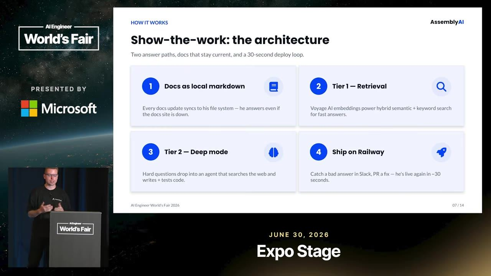
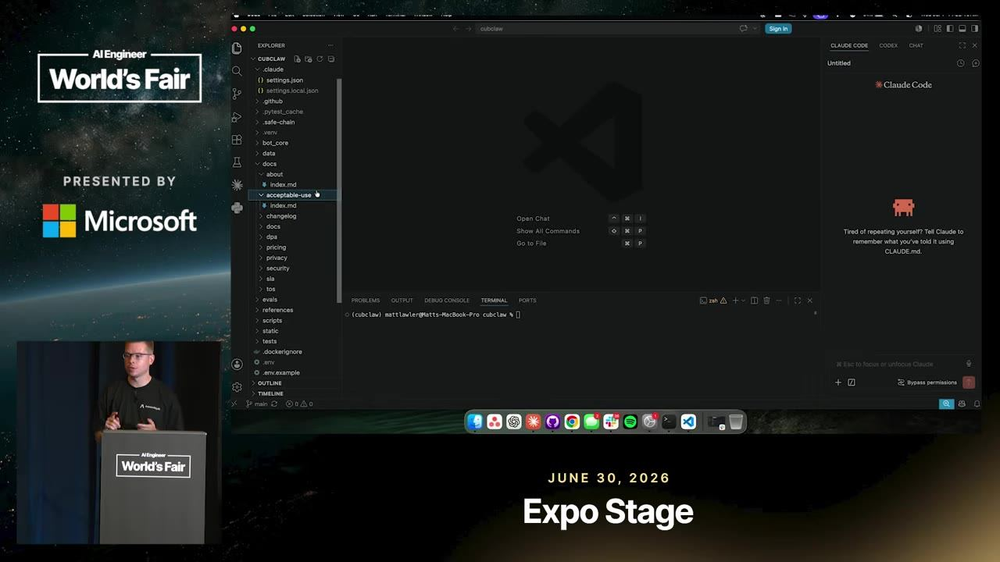
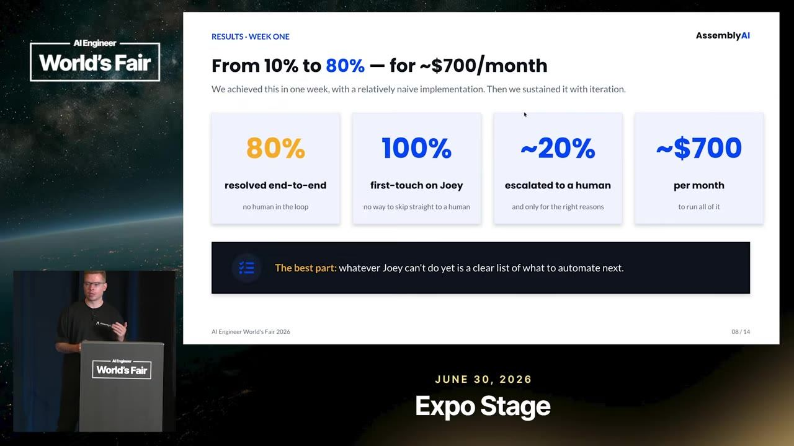
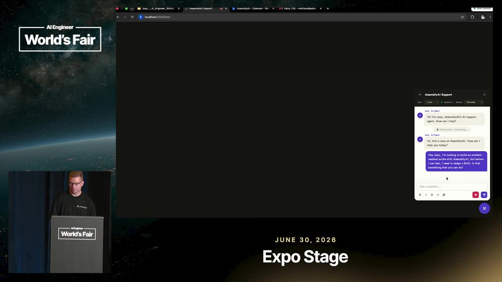

essencial do dia: A AssemblyAI levou a resolução de tickets de 10% para 80% com docs em markdown e um CLAUDE.md corrigido a cada erro.
Agente de suporte com docs em markdown e CLAUDE.md
We Built an AI Support Agent That Resolves 80% of Tickets
Troque o bot de prateleira por um agente seu, com docs em markdown e um CLAUDE.md que você corrige a cada erro.
Depois deste talk você consegue montar um agente de suporte que lê a documentação em markdown e melhora a cada erro corrigido no CLAUDE.md
Em 3 frases
A AssemblyAI recebe cerca de mil cadastros de API por dia e tinha um único engenheiro de onboarding. Um bot de prateleira resolvia só 10% das conversas e a equipe não podia mexer em prompt, ferramentas nem RAG.
Eles construíram o Joey sobre o Claude Agent SDK, com docs em markdown local, embeddings da Voyage, busca agêntica em arquivos e um CLAUDE.md enorme. Cada resposta errada vira uma correção no CLAUDE.md, publicada em cerca de 30 segundos no Railway.
Segundo o palestrante, a resolução ponta a ponta foi de 10% para 80% na primeira semana, por cerca de US$ 700 por mês. Depois ele deu voz ao Joey com a Voice Agent API da empresa e defendeu que engenheiros de campo usem o próprio produto.
Antes de ler
- CLAUDE.md / AGENTS.md arquivo de instruções carregado no contexto do agente analogia no glossário
- Embedding vetor que representa o sentido do texto analogia no glossário
- Busca agêntica em arquivos agentic file search
- Claude Agent SDK kit para construir agentes sobre o Claude
- Taxa de resolução ponta a ponta end-to-end resolution rate
- Forward deployed engineer engenheiro alocado junto ao cliente analogia no glossário
Bot de prateleira trava por falta de acesso
O bot comprado resolveu 10% das conversas. Sobravam cerca de 900 tickets por dia para humanos. O pior problema era não ter acesso ao system prompt, às ferramentas nem ao RAG. Toda mudança pedida ao fornecedor ouvia que estava no roadmap.
 (ampliar imagem)
(ampliar imagem)
Arquitetura do Joey em quatro peças
Docs viram markdown local no sistema de arquivos do agente. Embeddings da Voyage trazem os trechos mais relevantes logo de início. Se a dúvida exigir mais, o agente busca nos arquivos por conta própria. O deploy fica no Railway, sem EC2 para administrar.


(ampliar imagem)Corrigir o agente é editar um arquivo
Quando o Joey erra, a equipe revisa a conversa no Slack, ajusta o CLAUDE.md e faz um PR. Um novo Joey entra no ar em cerca de 30 segundos. Já houve caso de bug corrigido durante uma conversa ao vivo, sem o cliente notar.


(ampliar imagem)Mais 2 ideias deste talk
Resultado e o que sobra para humanos
A resolução foi de 10% para 80% na primeira semana, por cerca de US$ 700 mensais. O Joey recebe 100% dos tickets e escala 20% para humanos, em casos como mudança de tarifa, opt-out de dados e contratos. Cada escalação vira um item do roadmap do agente.


(ampliar imagem)Voz com uma única conexão websocket
A Voice Agent API junta speech-to-text, LLM e text-to-speech numa conexão só, com tratamento de pausas e interrupções. No demo, o Joey responde por voz sobre assinar um BAA (acordo HIPAA) e cita as docs no chat.


(ampliar imagem)É palestra de empresa que vende a Voice Agent API, e o fim vira anúncio do produto. O 80% de resolução vem da própria equipe, sem definição de "resolvido" e sem checar se o cliente voltou ou ficou satisfeito. Ele chama a implementação de ingênua e cita US$ 700 por mês sem detalhar tokens e infraestrutura. Não há taxa de erro do Joey nem exemplos de respostas erradas. A demo foi simulada localmente, com uma única pergunta fácil.
Teste você mesmo
Responda de cabeça antes de abrir. Lembrar com esforço é o que fixa.
- lembrar Como o Joey foi construído e onde cada resposta errada é corrigida?
Ver resposta
Sobre o Claude Agent SDK, com docs em markdown local, embeddings da Voyage e busca agêntica em arquivos. Cada erro vira uma correção no CLAUDE.md, publicada em cerca de 30 segundos no Railway.
- aplicar Quais motivos de escalação do seu suporte você trataria como itens de roadmap do agente?
Ver resposta
Liste os motivos pelos quais os tickets chegam a um humano e trate cada um como item de roadmap, corrigindo o CLAUDE.md e a documentação para cada motivo.
- criticar Por que o número de 80% de resolução merece cautela?
Ver resposta
Vem da própria equipe, sem definição de resolvido e sem checar se o cliente voltou ou ficou satisfeito. Também não há taxa de erro nem exemplos de respostas erradas, e a empresa vende o produto citado no fim.
Mini agente de suporte sobre uma documentação
Você precisa de: Claude Code e a documentação de um projeto open source em markdown
- Baixe a documentação de um projeto open source em markdown para uma pasta.
- Crie um CLAUDE.md pedindo respostas só com base nos arquivos, citando o caminho de cada fonte.
- Faça 10 perguntas como se fosse um usuário e anote as respostas erradas.
- Para cada erro, corrija o CLAUDE.md e repita a pergunta.
Deu certo se: A maioria das 10 perguntas sai certa, com fonte citada, e cada erro corrigido deixou de se repetir.
O que fazer com isso
- Liste os motivos de escalação do seu suporte e trate cada um como um item de roadmap para o agente.
- Converta a documentação do seu produto para markdown e deixe o agente ler os arquivos, citando a URL de cada fonte.
- Mantenha um CLAUDE.md versionado no repositório e corrija-o a cada resposta ruim, com deploy rápido.
- Antes de comprar um bot de suporte, confirme se você terá acesso ao prompt, às ferramentas e ao RAG.
Conversa com outros talks
- Busca agêntica ou vetorial? Decida com um eval · 5 out · em comum: Busca agêntica em arquivos, Embedding
- Busca na web com data de corte para testar agentes · 19 out · em comum: Embedding, Forward deployed engineer
- O papel do Chief AI Officer e como medir fluência · 30 set · em comum: Dogfooding